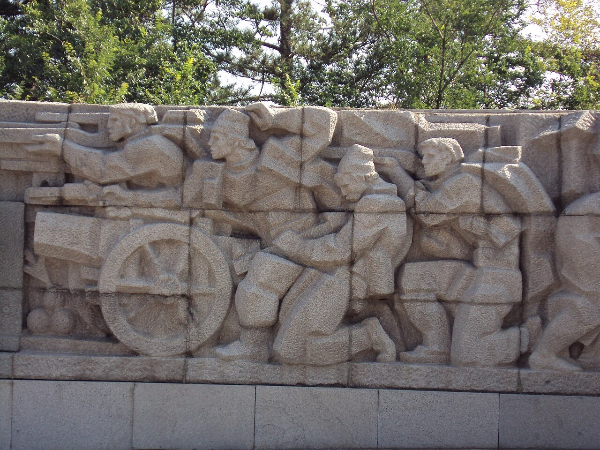
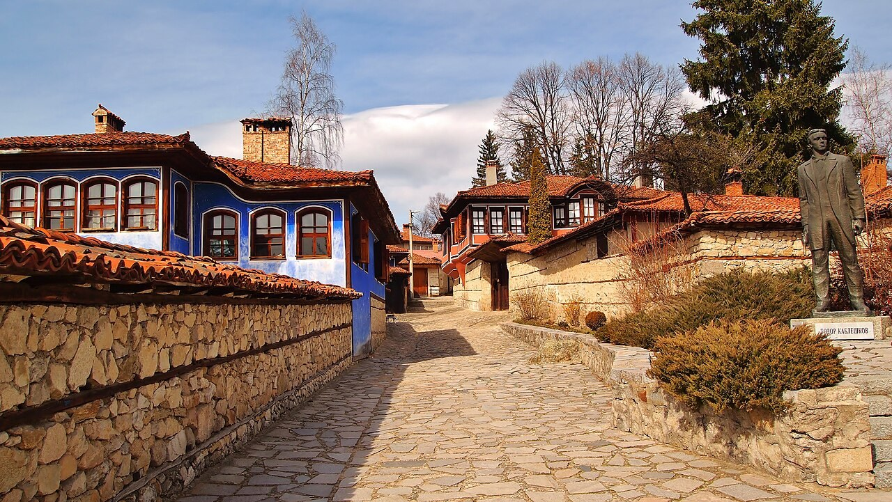

Георги Бенковски
Човекът, който превръща решението в движение и повежда Хвърковатата чета.

Априлското въстание · 1876
Едно решение да бъдеш свободен.
Историята на хората, които го взеха.
ПРЕДИ ДА ИМА СВОБОДА
През пролетта на 1876 г. учители, занаятчии, духовници и революционери се изправят срещу Османската империя. Въстанието е потушено. Неговият отзвук прекрачва границите.
Подготовката започва с решенията на Гюргевския революционен комитет. Апостолите изграждат мрежа от местни комитети, събират оръжие и търсят съгласие за общо действие. Най-широк размах въстанието получава в Четвърти революционен окръг. [1]
На 20 април в Копривщица опитът за арест на Тодор Каблешков ускорява събитията. Кървавото писмо достига до Панагюрище. Изборът вече е направен.
01 / ГЕОГРАФИЯ НА СЪПРОТИВАТА
От първия изстрел в Копривщица
до пътя на Ботевата чета.
Избери точка. Открий нейната история.
Началото на въстанието
20 април / 2 май 1876
Мястото на първия изстрел. При опита на османските власти да арестуват Тодор Каблешков местните революционери обявяват въстанието. Оттук потегля Кървавото писмо до Панагюрище — знак, че общото действие вече е започнало.
Кръг: огнище или ключово място · Ромб: сражение · ✓: разгледано място. Свързващите тънки линии показват точната позиция на близки маркери. Номерата следват списъка, а не задължително хронологията.
Географска основа: Natural Earth. Показани са съвременни граници само за ориентация. Точките обозначават населени места и исторически местности, а не точни бойни позиции.
02 / ЛИЦАТА ЗАД ИСТОРИЯТА
Едно писмо. Едно знаме. Една чета.
Различни съдби, свързани
от обща представа за свобода.
Човекът, който превръща решението в движение и повежда Хвърковатата чета.
Райна Попгеоргиева извезва знамето, което се превръща в образ на свободата.
На 25 години дава сигнала от Копривщица. Писмото му прекрачва времето.
От думите към действието: „Радецки“, Козлодуй и последните дни в Балкана.
Определен за главен апостол на Четвърти окръг. Работи с Бенковски за подготовката на комитетите и участва във въстаническите действия.
Прочети повече ↗Участва в подготовката и в Хвърковатата чета. Неговите „Записки по българските въстания“ са основен мемоарен извор и литературен паметник на епохата.
Прочети повече ↗Киро Петров Занев е учител и книжовник. Участва в четата на поп Харитон и в отбраната на Дряновския манастир. След залавянето е осъден и обесен.
Прочети повече ↗Организатор на местния революционен комитет и един от ръководителите на въстанието в Брацигово. Остава символ на саможертвата при потушаването му.
Прочети повече ↗Учител и революционер, свързан с комитетската организация. Ръководи въоръжената съпротива в Перущица и загива в боевете.
Прочети повече ↗Американският кореспондент на „Дейли нюз“ описва последствията от потушаването. Репортажите му за Батак имат силно въздействие върху европейското обществено мнение.
Прочети повече ↗ДОКУМЕНТЪТ, КОЙТО ДАВА ЗНАК
Братия!
„Ако вие, братия, сте биле истински патриоти и апостоли на свободата, то последвайте нашия пример…“
Т. Каблешков
Откъс от „Кървавото писмо“, предадено в „Записки по българските въстания“ на Захари Стоянов. Правописът следва цитирания текст. Прочети „Записките“ ↗
03 / ДНИТЕ, КОИТО ОСТАВАТ
Проследи как местният бунт
се превръща в европейски въпрос.
Датите са по Юлианския календар (стар стил). През XIX век разликата е 12 дни.
Революционни дейци обсъждат ново въстание и организирането на подготовката по окръзи. Апостолите поемат към българските земи.
Сдружение „Българска история“ ↗Представители на комитетите от Четвърти окръг обсъждат общите действия. Бенковски е утвърден като главен военен ръководител.
Национален военноисторически музей ↗Опитът за арест на Каблешков ускорява избухването. Кървавото писмо достига Панагюрище и въстанието обхваща нови селища.
Сдружение „Българска история“ ↗Знамето, извезано от Райна Попгеоргиева, е тържествено осветено. Надписът „Свобода или смърт“ изразява решимостта на въстаниците.
Исторически музей – Панагюрище ↗Клисура, Панагюрище, Перущица, Батак и Брацигово се превръщат в ключови места на Априлската епопея. Потушаването е съпроводено с масови убийства, палежи и разорение.
Исторически музей – Перущица ↗Четата на поп Харитон и Бачо Киро издържа деветдневна обсада. Сражението е сред най-значимите прояви на въстанието в Търновския окръг.
Исторически музей – Дряново ↗Ботевата чета слиза на българския бряг и поема към Врачанския Балкан. Надеждата е да подкрепи въоръжената борба.
Национален музей „Христо Ботев“ – Калофер ↗След сражения във Врачанския Балкан Христо Ботев загива. Оцелелите четници продължават борбата на малки групи.
Възпоменателният ден е 2 юни. Преобразуването на историческата дата 20 май 1876 г. дава 1 юни по нов стил.
Национален музей „Христо Ботев“ – Калофер ↗Разследвания и репортажи, включително тези на Макгахан, изнасят сведения за насилието. Обществени гласове в Европа настояват за реакция.
Исторически музей – Батак ↗Великите сили търсят дипломатическо решение на Източната криза. Неуспехът на преговорите е част от развитието към войната през 1877 г.
Исторически музей – Перущица ↗Русия обявява война на Османската империя. Българското опълчение се включва в кампанията заедно с руската армия.
Национален парк-музей „Шипка-Бузлуджа“ ↗Предварителният договор слага край на войната. Берлинският договор през юли променя предвиденото устройство: създадени са Княжество България и автономната област Източна Румелия.
Възстановяването на държавността през 1878 г. е различно от обявяването на независимостта през 1908 г.
Исторически музей – Перущица ↗04 / ПРЕДИ И СЛЕД
Свободата не идва през април 1876 г.
Но след него българският въпрос
вече не може да остане незабелязан.
ПРЕДИ · ДО 1876
Училищата, читалищата и революционната организация изграждат общности, способни да мислят за политическо освобождение. Подготовката разчита на местни връзки, доверие и ограничени средства.
Към историческия контекст ↗СЛЕД · ОТЗВУК И ПОСЛЕДИЦИ
Убити, затворени и разселени хора; разрушени домове и селища. Оцелелите, благотворителните инициативи и свидетелските разкази превръщат преживяното в трайна обществена памет.
Към историческия контекст ↗Априлското въстание е решаващ епизод от Източната криза. Международният отзвук, дипломатическите усилия и Руско-турската война от 1877–1878 г. водят до възстановяване на българската държавност. Пътят включва много участници и интереси. [2]
05 / ГЛЕДАЙ. ЧУЙ. ПОМНИ.
Документални разкази и срещи
с историци от архива на БНТ.
Избери видео и остани в историята.
За тайните наръчници, скритото оръжие и знанието, което превръща намерението в съпротива.
Разговор с историк за подготовката и смисъла на Априлската епопея.
Разказ от местата на събитията по повод 150-годишнината от въстанието.
За видеата е необходим интернет. Плеърът на YouTube се зарежда само след натискане на „Гледай“. При ограничено вграждане използвай връзката „В YouTube“.

ИСТОРИЯТА НЕ Е САМО В УЧЕБНИЦИТЕ
По калдъръма на Копривщица. В къщата на Райна Княгиня. По пътеката към Оборище. Местата пазят онова, което думите само започват.
Фотография: Meteo91 · Wikimedia CommonsПРОВЕРИ. ПРОЧЕТИ. ПРОДЪЛЖИ.
Образователен проект с подбрани музейни материали, документи и автентични изображения. Не е официален сайт на посочените институции.
При спорни оценки за броя на жертвите не даваме единна цифра. Паметта за загиналите не се нуждае от неподкрепена точност.
Мемориален комплекс „Априлци“, Панагюрище. Vislupus, 9 август 2014 г.. Оригинал и описание ↗ · CC BY-SA 4.0.
Копривщица. Meteo91, 16 март 2014 г.. Оригинал и описание ↗ · CC BY-SA 4.0.
Георги Бенковски. Паскал Себах, вероятно 1875 г.. Оригинал и описание ↗ · Обществено достояние.
Райна Княгиня. Неизвестен автор; Europeana / Wikimedia Commons. Оригинал и описание ↗ · Обществено достояние.
Тодор Каблешков. Неизвестен автор, преди 1876 г.. Оригинал и описание ↗ · Обществено достояние.
Христо Ботев, 1875 г.. Неизвестен автор; ДА „Архиви“, ЦДА, ф. 1271К, оп. 1, а.е. 161, л. 2; цифрово копие BASA Спасимир. Оригинал и описание ↗ · Обществено достояние.
Миниатюри на видеата. Българска национална телевизия / YouTube. Използвани като визуални връзки към съответните предавания; правата остават на авторите.
Фотографиите са преоразмерени и композиционно изрязани; на места са показани с цветен филтър. Променените фотографски версии запазват съответния CC BY-SA лиценз.
Географска основа: Natural Earth · обществено достояние. Картографска библиотека: Leaflet 1.9.4 · BSD-2-Clause. Шрифтове Literata и Sofia Sans · SIL Open Font License.
За събитията от 1876–1878 г. разликата между стар и нов стил е 12 дни. Празничните и възпоменателните дати невинаги съвпадат с механичното преобразуване на историческата дата.
Маршрутите са схематични връзки между основни места. Те не са GPS следи и не са предназначени за туристическа навигация. Съвременните граници не изобразяват политическата карта от 1876 г. Околчица е мемориално средище близо до последните сражения на Ботевата чета, а не обозначение на точното място на гибелта на Ботев.
Слой „Към Освобождението“ е посветен на отделната война от 1877–1878 г. и не представя нейните битки като част от Априлското въстание.